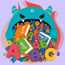
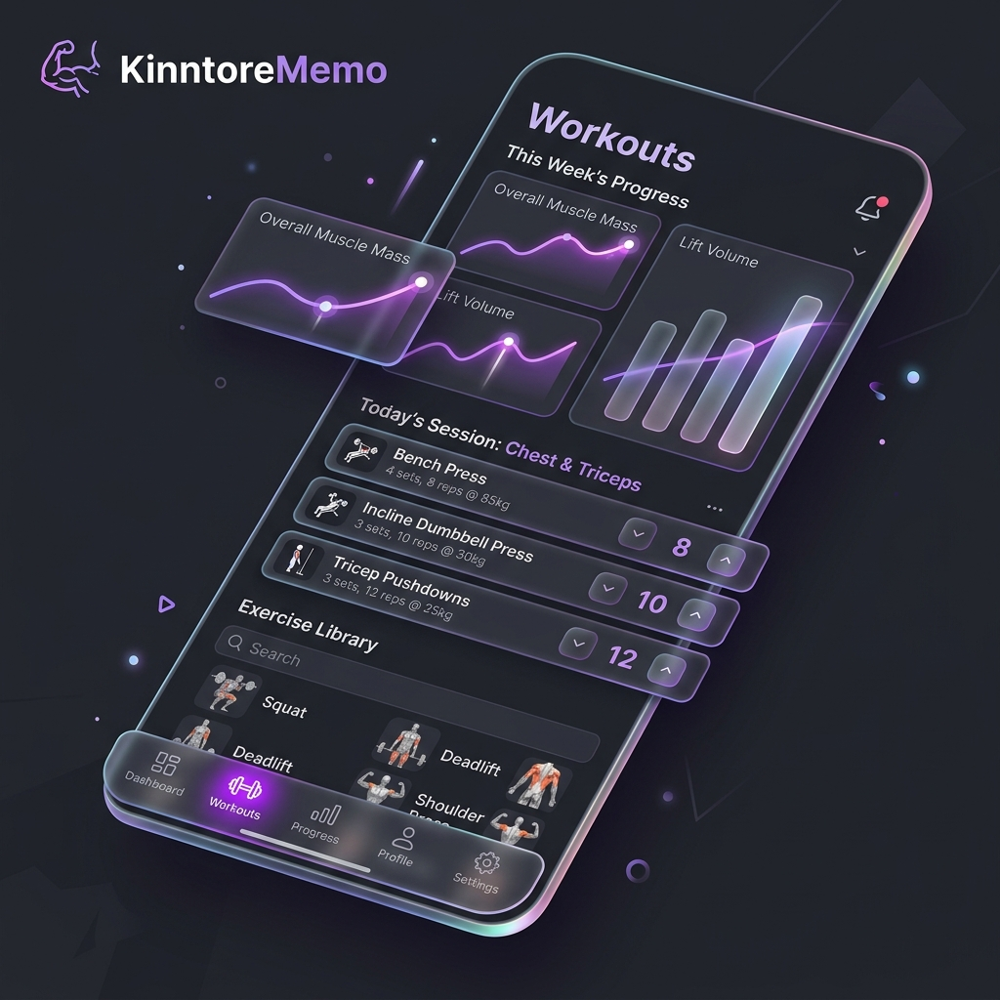

formX - 動作解析＆垂直跳び測定の使い方と機能
iPhoneのスロー動画からタイムや垂直跳びを精密に自動算出。さらに骨格表示によるフォーム解析や2つの動画の同期比較（デュアル計測）の使い方を動画付きで詳しく解説します。
ガイドを見るkpworks / ARTICLES & GUIDES
個人開発の知見、トレーニングの科学的根拠、アプリ活用ガイドなどを掲載しています。
iPhoneのスロー動画からタイムや垂直跳びを精密に自動算出。さらに骨格表示によるフォーム解析や2つの動画の同期比較（デュアル計測）の使い方を動画付きで詳しく解説します。
ガイドを見る中学生・高校生・一般成人の垂直跳び平均データまとめ。スマホ動画から滞空時間で精密測定する仕組みや、スクワット・プライオメトリクスによるジャンプ力強化メニューを解説。
記事を読む
耳からの自動聞き流し再生、PC・Chrome拡張機能とのシームレス連携、SNSアプリブロック機能、全問正解アラームを搭載した自作単語帳アプリの活用法を徹底解説。

「筋トレがなかなか継続しない…」そんな悩みはありませんか？本記事では、トレーニング重量や回数を克明に記録し可視化することが、脳の報酬系に与えるプラスの影響について解説します。
記事を読む敵の移動ルートをプレイヤーが自由に制御できる「オープンフィールド型タワーディフェンス」。ゲームをよりスリリングにするための、最適な迷路構築メカニクスとAIの経路探索アルゴリズムについて。
記事を読む数多くのプロジェクトを着手するものの、途中で挫折して「未完のままで放置」になっていませんか？最後までプロダクトを作りきり、リリースするためのマインドセットと具体的なタスク管理手法を共有します。
記事を読む